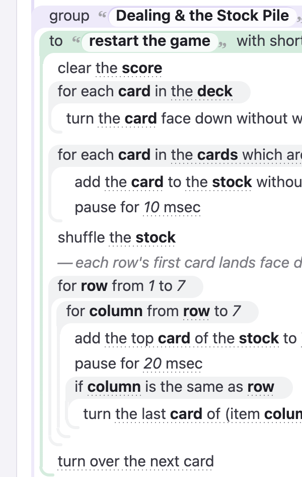
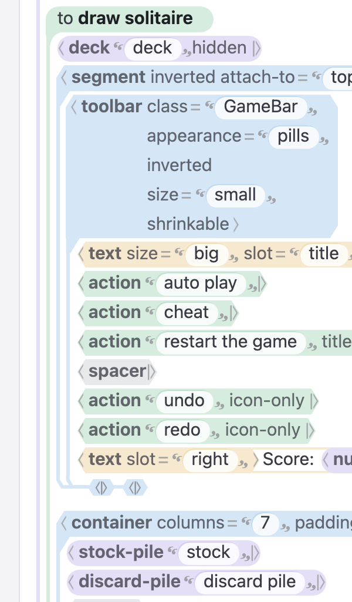
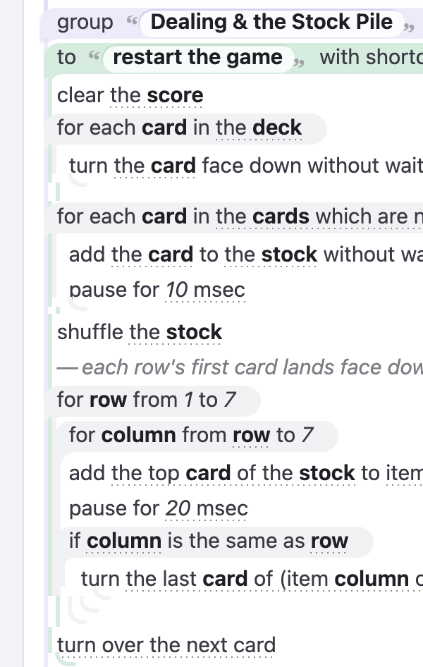
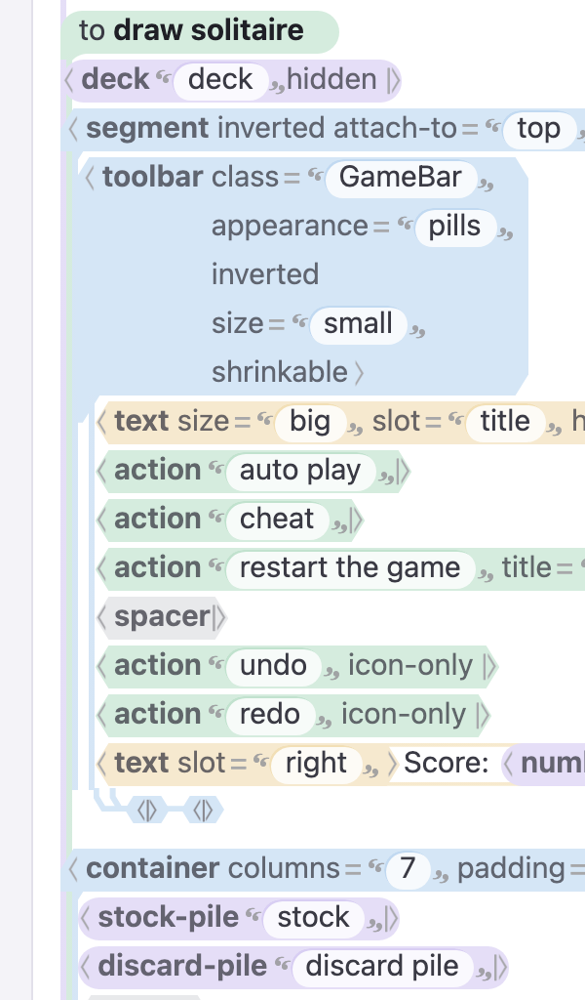
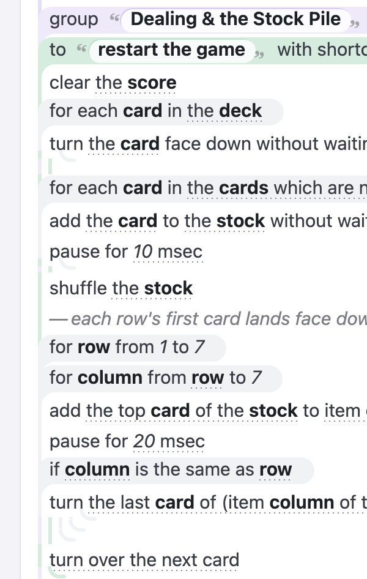
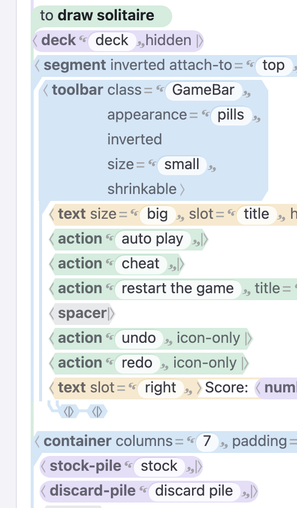
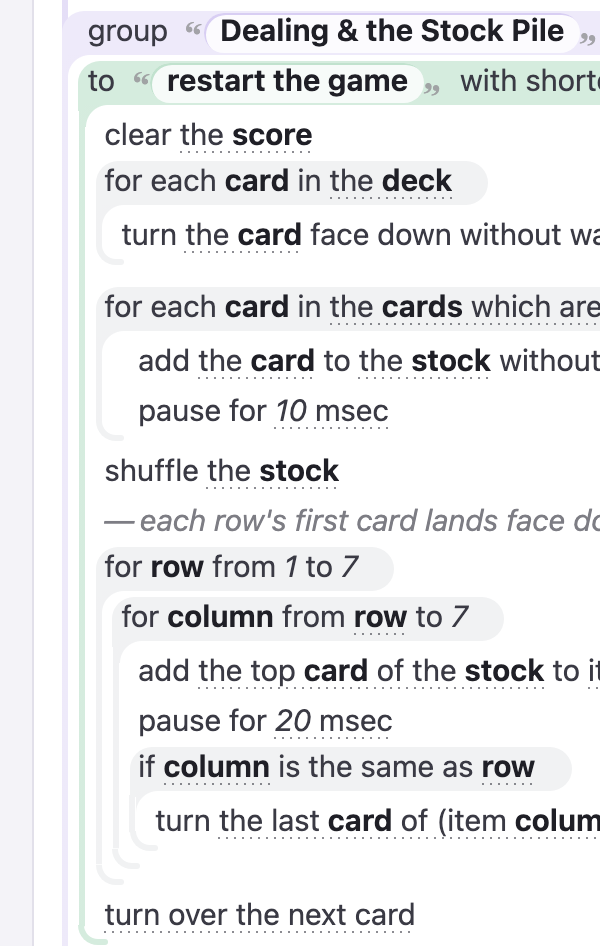

How far in a body's lines sit
How far in a Spell body's lines sit, now that a plain line like clear the score feels a tab
too far in. Pictures of each way below: pick one.
language -- Spell, the language, and how the editor draws it (the bubbly look).Now. On the left a handler's body; on the right a drawing.


- Every band's words start a tab in from its left edge.
-
Plain lines start where the words on the bands beside them do, so
clear the scorelines up withfor each's words. - Each level's rail is a tab right of its parent's.
- So a body's plain words are 16px from their rail, while the band beside them is 5px from it.
The pictures are mock-ups on the editor's demo page, which shows an older Solitaire. In them the little curl at the bottom of each body stays where it was; built, it moves with its rail.
How far in should a Spell body's lines sit from their head? In every option the HTML inside a drawing keeps its spacing; the drawing as a whole moves with the Spell body it's in.
Each body's rail sits right against its parent's, so each level is 3px further in. Nesting still shows, much tighter.


As you described: each body's rail on top of its parent's. Every level lands at the same x:
turn the card face down lines up with for each, and the levels only show
by their bands' colours. The drawing's outer tags sit on
to draw solitaire's rail, two spaces in from now.


Rails a tab apart, as now; every band's words and every plain line 5px further left. A nested band then starts 4px right of its head's words. Drawings unchanged.

No spacing change; only the caret fix.